1简介与背景
爱丽丝接到了一声奇怪的求救。经过客厅的镜子时，她猛然看见镜面上反写着一行字：“爱丽丝，我们需要一位新女王。”她毫不犹豫地伸手触碰镜子，手掌竟然穿了过去——紧接着整个人也被拽进了镜中的世界……
在《Queen Alice》中，每位玩家都是镜中宫廷（Looking-Glass Court）的一员，负责筹备爱丽丝的加冕宴席。表现最好的人将成为新女王的首席顾问，赢得游戏胜利。
为此，玩家必须说服居住在这个世界里的红色与白色棋子出手相助。玩家在宫廷中的影响力是关键：哪一方对宴席贡献最大，爱丽丝就会被加冕为白女王或红女王——甚至可能同时成为两位！
你能否把局势操纵得对自己有利，确保爱丽丝以对你最有利的颜色加冕？你能否成为爱丽丝新王朝中最有势力的廷臣？
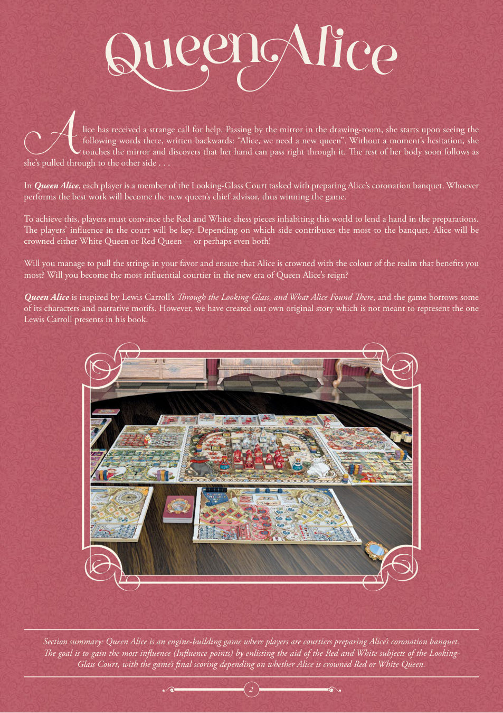
2配件
中央版图 ×1 · 卡牌市场版图 ×1 · 行动版图 ×4（红心、黑桃、梅花、方块）
红色棋子 ×9 · 白色棋子 ×9 · 皇冠标记 ×11
书本标记 ×27（3 种颜色）· 书签板块 ×42 · 花朵标记 ×32（每种 8 个）
爱丽丝的心愿板块 ×16 · 200/300 声望标记 ×4（分数标记）· 镜子标记 ×1
卡牌 ×90（30 铜 + 30 银 + 30 金）
红园丁与白园丁（红心版图）
国王信使：红疯帽匠与白三月兔（黑桃版图）
双子：红特威达姆（Tweedledum）与白特威迪（Tweedledee）（梅花版图）
矮胖子（Humpty Dumpty）红白半身件（方块版图）
红爱丽丝与白爱丽丝棋子
朝臣版图 ×1 · 声望标记 ×1 · 时钟指针 ×1
红心标记 ×10 · 方块标记 ×10 · 爪印标记 ×2（红白各一）
黑色立方体 ×5 · 3 个玩家色立方体 · 基础卡 ×10
玩家提示板块 ×1 · 棋子走法提示卡 ×1
车票卡（Train Cards）×16 · 黛娜卡（Dinah cards）×10（单人模式用）
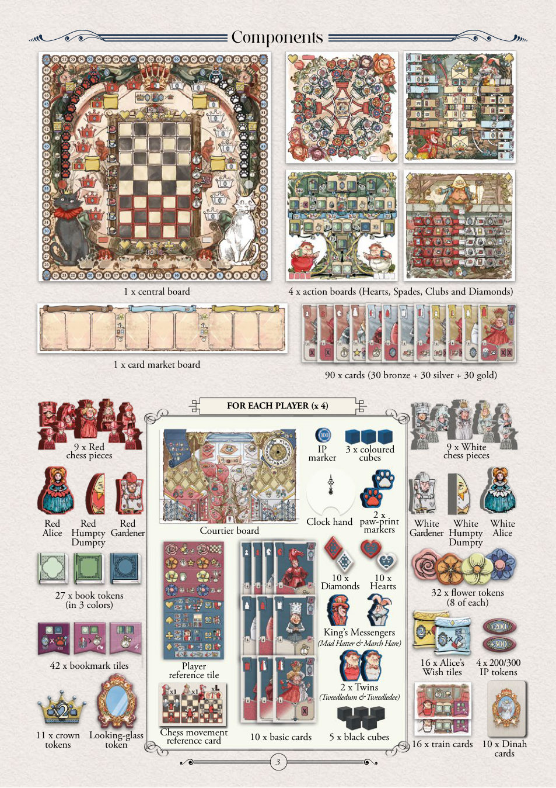
3公共设置
按以下步骤布置游戏场地：
- 主版图：放置中央版图，将四块行动版图与卡牌市场版图围放在四周。每块版图都按玩家人数使用对应的一面（1–2 人 或 3–4 人）。
- 棋子：洗混玩家提示板块，抽取一块，按其背面图示在中央版图上布好棋盘。
- 爱丽丝的心愿：把心愿板块按图标类型分成四叠。每叠洗混后各抽取 1 块，组成一组四块。（第一局游戏请使用此处图示指定的四块。）将这四块洗混，随机放到心愿格上，黄色面朝上。
- 皇冠：把皇冠标记放到中央版图底部的对应格上，“×2”面朝上。4 人游戏用 8 个皇冠，3 人用 7 个，2 人用 6 个。
- 爱丽丝棋子：把红爱丽丝与白爱丽丝棋子放到各自路径的起点。
- 卡牌市场：把玩家颜色的基础卡放到一旁。其余卡牌分成铜、银、金三副牌库并各自洗混。为市场的每一层补位：在该层左侧两个空格各放一张对应颜色的卡，牌库剩余的卡面朝上放在该层最右侧的格子——这些顶牌在获取卡牌时同样可以选购。
- 行动棋子：把红园丁与白园丁放到红心版图上（7a）；把玩家颜色的国王信使（红疯帽匠与白三月兔）放到黑桃版图上（7b）；把玩家颜色的双子（红特威达姆与白特威迪）放到梅花版图上（7c）；把矮胖子的红白半身件放到方块版图上（7d）。
- 书签、书本与花朵：书签板块按其顶部标示的书本费用分成数叠，放在梅花版图旁。每种颜色的书本标记成叠放在梅花版图旁，每种颜色的花朵标记放在红心版图旁。在梅花版图上每个没有印制书本图案的格子里放 1 个白色书本标记（8a）。
- 爪印：把每位玩家的白色爪印标记放到白猫轨道起点，红色爪印标记放到红猫轨道起点。
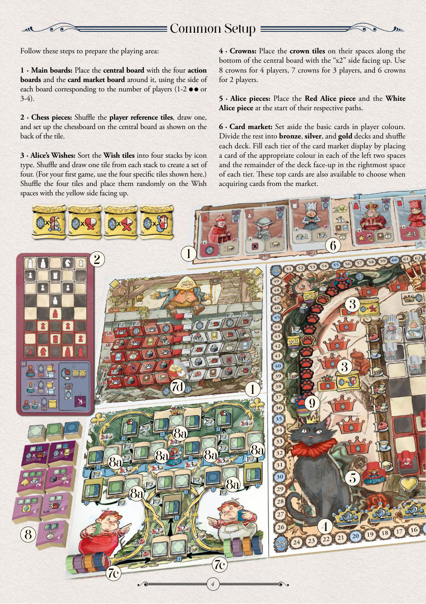
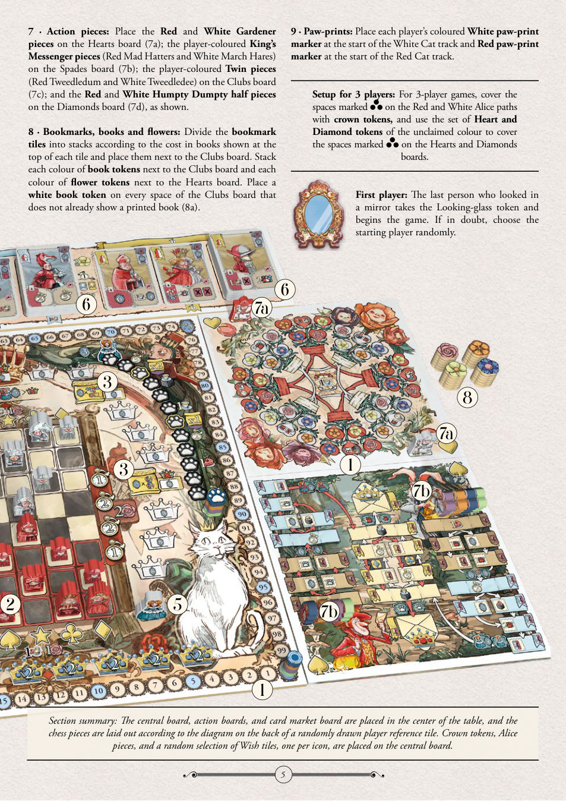
4玩家设置
- 版图与标记：拿取一块朝臣版图和对应玩家颜色的标记。把亚克力时钟指针装到版图的钟面上。
- 摆放标记：把红色与白色的红心标记（2a）和方块标记（2b）放入各自的槽位。
- 起始资源：把 3 个玩家色立方体放到银盘上。
- 黑色立方体：拿 5 个黑色立方体，放入上锁储藏区。
- 起始手牌与牌库：拿取你颜色的 10 张基础卡，洗混后面朝下放到抽牌区，抽取 3 张组成起始手牌。
- 玩家提示板块：拿取你颜色的玩家提示板块，放在朝臣版图旁。
声望（IP）轨道：把你颜色的声望标记放到环绕中央版图的声望轨道“0”位上。 - 车票卡 · 选择：每位玩家获得 2 张车票卡。秘密选择 1 张，并决定使用其白色面还是红色面。第一局游戏可以直接发标有星星的 4 张。
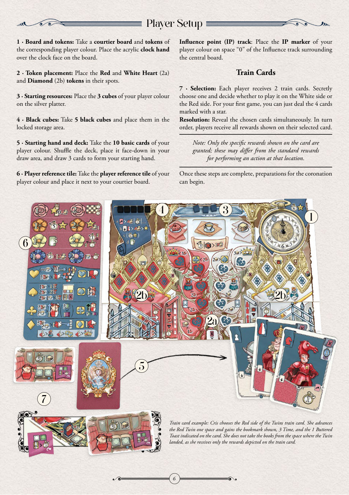
完成以上步骤后，加冕的筹备工作就可以开始了。
5卡牌与邀请
在《Queen Alice》中，你通过在镜中世界各处执行行动、移动棋子来召集臣民协助，为爱丽丝筹备加冕宴席。
卡牌结构
卡牌是游戏引擎的驱动力，按层级分级：基础、铜、银、金。每层有独特的底色与横幅形状。起始牌库只含基础卡，更强大的卡可在游戏中购入。卡面包含四个部分：
标示你可移动的棋子类型与颜色。百搭棋子卡允许你移动对应类型的任意颜色棋子。
打出该卡时立刻获得的奖励。基础卡没有打出奖励。
在你回合开始时弃除该卡所能获得的奖励。
终局计分时，若该卡被邀请参加加冕宴席，可获得的声望点数。
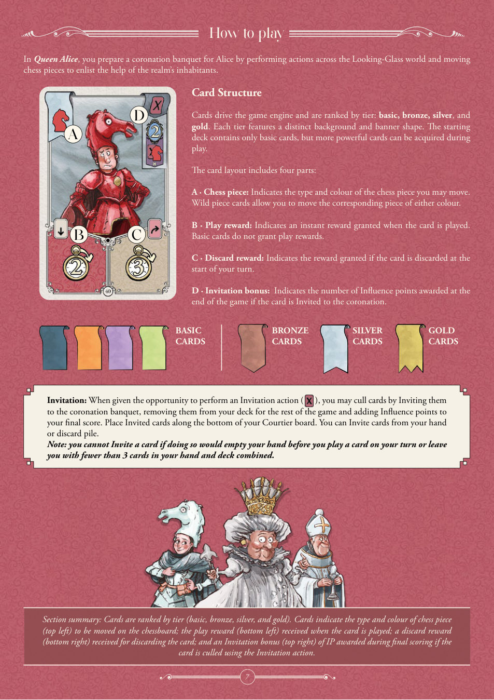
6中央版图
中央版图包含棋盘（A）、爱丽丝的路径（B）、皇冠陈列区（C）、猫咪轨道（D）与声望轨道（E）。
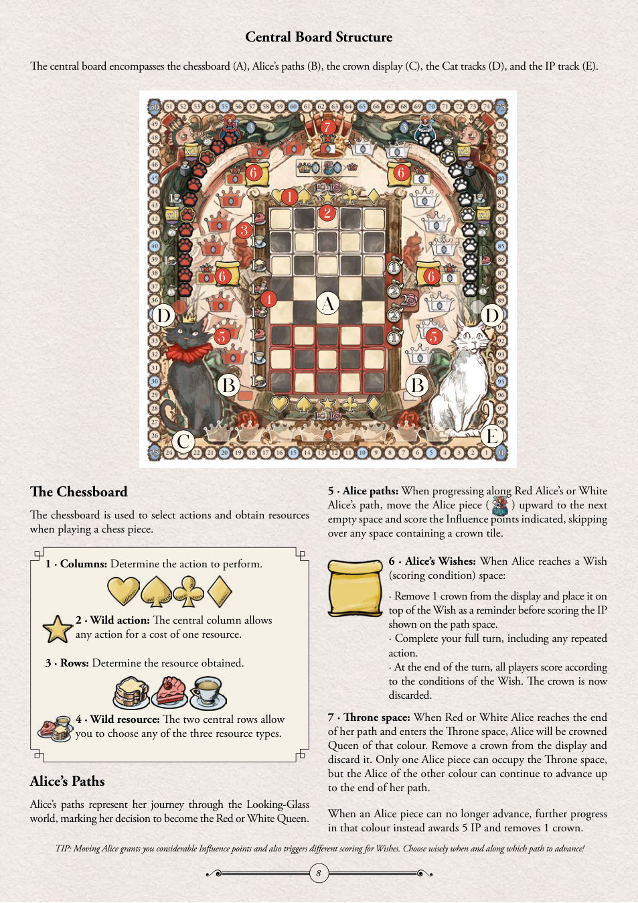
棋盘
棋盘用于选择行动，并在打出棋子时获得资源。
- 1 · 列：决定要执行的行动。
- 2 · 通用行动：中央列可以执行任意行动，但需支付 1 个资源作为代价。
- 3 · 行：决定获得的资源。
- 4 · 百搭资源：中央两行允许你在三种资源中任选。
爱丽丝的路径
爱丽丝的路径代表她穿越镜中世界的旅程，标记她决定成为红女王还是白女王。
- 5 · 爱丽丝路径：沿红爱丽丝或白爱丽丝的路径推进时，把爱丽丝棋子向上移到下一个空格，并得到该格标示的声望；跳过任何放有皇冠标记的格子。
- 6 · 爱丽丝的心愿：当爱丽丝抵达一格心愿（计分条件）时：
- 从陈列区移除 1 个皇冠，先放到该心愿上作为提醒，然后结算路径格上标示的声望。
- 完成你的整个回合，包括任何重复行动。
- 回合结束时，所有玩家按该心愿的条件计分。之后皇冠弃除。
- 7 · 王座格：当红或白爱丽丝走到路径终点进入王座格时，爱丽丝将以该颜色加冕为女王。从陈列区移除 1 个皇冠并弃除。王座格只能被一个爱丽丝棋子占据，但另一颜色的爱丽丝仍可继续推进至其路径终点。
当某个爱丽丝棋子无法再推进时，该颜色的后续推进改为获得 5 IP 并移除 1 个皇冠。
皇冠陈列区
皇冠既是倍率器，也是游戏结束的触发器。
- 获得皇冠：执行某些行动可以获得皇冠。得到皇冠时，从陈列区取 1 个皇冠标记，放到当前活跃路径上爱丽丝位置前方的下一个空格，并立刻结算该格标示声望的两倍。爱丽丝下次在该路径上推进时，会跳过放有皇冠的格子，前进到下一个空格。
- 皇冠奖励：得到皇冠时，若当前路径没有空格或皇冠陈列区已空，改为结算 10 IP。若路径已满但陈列区仍有皇冠，则从陈列区移除并弃除 1 个皇冠，结算 10 IP。
- 游戏结束：当最后一个皇冠被从陈列区移除时，触发游戏结束。完成当前轮次，让所有玩家获得相同的行动次数，直到持有镜子标记的玩家右侧的玩家完成回合为止。
猫咪轨道
当你获得爪印🐾时，沿对应的红猫或白猫轨道前进你的标记。获得你落格以及跳过的所有格子的奖励。多个标记可以共用一格。
终局计分条件：你在这条轨道上的进度决定你终局能计哪些心愿：
- ×1：为该颜色计分一个你自选的心愿。
- ×2：为该颜色计分两个心愿。
卡牌市场
卡牌市场为铜、银、金三档卡牌各设三个格位。
| 格位 | 费用 |
|---|---|
| 左格 | 免费。 |
| 中格 | 支付 1 点时间。 |
| 右格 | 支付 1 个自选资源。 |
获取：购入的卡直接加入手牌，可以立刻使用。市场只在休整阶段补货：把卡向左滑动填补空位。
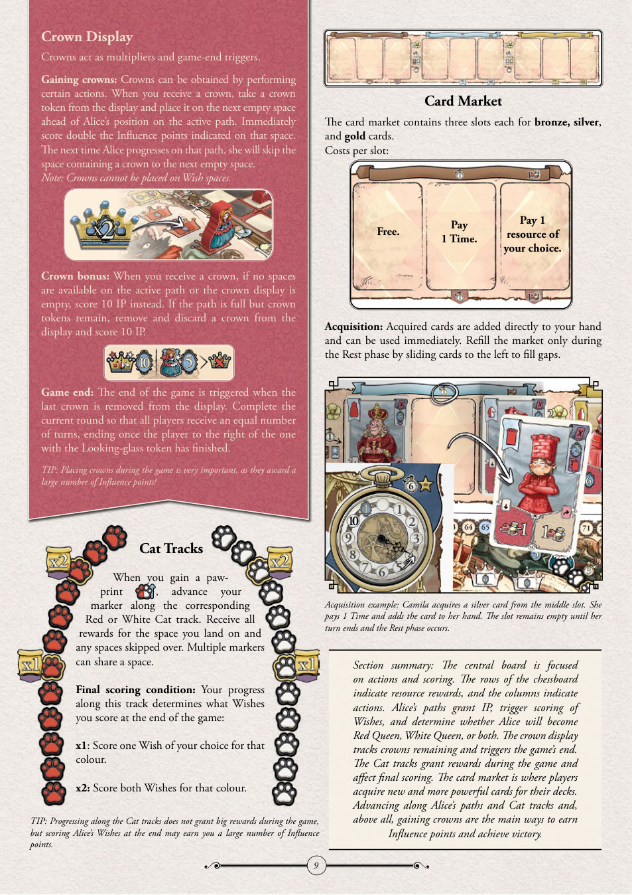
7朝臣版图
玩家的个人版图——朝臣版图——划分为若干区域。
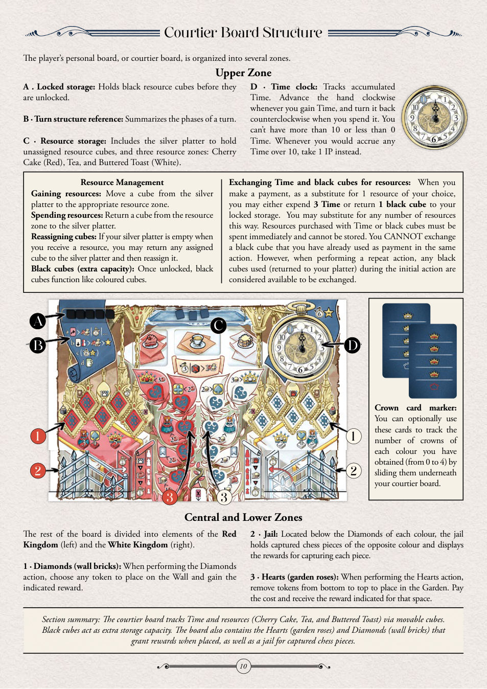
上部区域
- A · 上锁储藏区：存放尚未解锁的黑色资源立方体。
- B · 回合结构提示：概括一个回合的各阶段。
- C · 资源储存区：包含存放未分配资源立方体的银盘，以及三个资源区：樱桃蛋糕（红）、茶、黄油吐司（白）。
- D · 时间时钟：追踪累积的时间。获得时间时顺时针拨动指针，花费时间时逆时针回拨。时间不能超过 10，也不能低于 0。每当有超出 10 的时间时，改为获得 1 IP。
版图其余部分划分为红色王国（左）与白色王国（右）的要素。
中央与下部区域
- 方块（砌墙砖）：执行方块行动时，任选一个标记放到墙上并获得标示的奖励。
- 监狱：位于每色方块下方，关押被俘获的对方颜色棋子，并展示俘获每种棋子的奖励。
- 红心（花园玫瑰）：执行红心行动时，从下到上移除标记放入花园。支付费用并获得该格标示的奖励。
资源管理
- 获得资源：把 1 个立方体从银盘移到相应的资源区。
- 花费资源：把 1 个立方体从资源区放回银盘。
- 重新分配：若你获得资源时银盘已空，可以把任何一个已分配的立方体放回银盘，再重新分配它。
- 黑色立方体（额外容量）：解锁后，黑色立方体等同玩家色立方体使用。
- 用时间和黑色立方体兑换资源：支付时，可以用以下方式替代 1 个自选资源：耗去 3 点时间，或把 1 个黑色立方体放回上锁储藏区。可以按此方式替代任意数量的资源。用时间或黑色立方体换得的资源必须立刻花掉，不能储存。同一次行动中不能把已经用作支付的黑色立方体再拿去兑换。不过，执行重复行动时，初次行动中用掉（放回银盘）的黑色立方体视为可用于兑换。
8回合结构
每位玩家的回合依次经过四个阶段：三个必选，一个可选。
- a · 弃除一张牌。
- b · 打出一张牌。
- c · 重复行动（可选）。
- d · 休整（整理）。
a · 弃除一张牌
从手牌选一张卡弃除，获得其弃除奖励。把卡面朝上放入你的弃牌堆。
b · 打出一张牌
从手牌再选一张打出，叠放在刚弃除的那张卡上。
- 打出奖励：若打出的卡标有打出奖励，立刻获得。奖励中的折扣每回合只能生效一次。注意：基础卡没有打出奖励。
- 移动或营救：打出卡上标示的棋子。
- 移动：按标准国际象棋规则（见棋子走法提示卡）在棋盘上移动棋子。注意：兵永远不能移动超过一格。
- 营救：你也可以改为“营救”一枚该类型的被俘棋子（你的或对手的）。被营救的棋子当回合不能移动。
- 结算落格：棋子本回合停驻格的行决定获得的资源，列决定要执行的行动。先收资源，再以棋子的颜色执行行动。
- 打出被堵的棋子：若棋子被堵住无法移动，原地打出它，激活其当前位置的效果。即使其他兵还能动，你也可以打出被堵的兵。
俘获
俘获遵循标准国际象棋规则。若你的移动落在一个对方颜色棋子占据的格上，将其俘获并放入你版图上相应的监狱。国王也可以像其他棋子一样被俘获；没有“将军”。按被俘棋子的价值获得累积奖励：
- 兵：1 点时间。
- 马/象/车：1 资源 + 1 点时间。
- 王/后：1 个被俘颜色爪印 + 1 资源 + 1 点时间。
营救棋子
若你想打出的棋子已被任何玩家（包括你自己）俘获，可以营救它。把该棋子放到其颜色的任意空置重生格上，激活该格效果来结束移动。营救来源监狱所属的玩家获得 1 点时间作为补偿。若所有重生格都被占满，把棋子放到任意空格。
兵的升变
若你把兵移入最远一行，获得 1 个该兵颜色的爪印。立刻把兵移到其颜色的一个重生格上，并以激活该新格（含其关联资源与行动）结束移动。
跳过行动
若你不能或不想执行行动，改为获得 2 点时间并休整。
c · 重复行动（可选）
每回合限一次，可选支付 6 点时间重复刚执行的行动。必须以相同颜色执行重复的行动，并支付其行动费用。不打出新卡。
d · 休整（整理）
回合的最后阶段：刷新你的手牌、卡牌市场、所有已翻面的书签板块，并结算已触发的心愿。
- 刷新手牌：补抽至手牌上限（通常为 3）或弃除至手牌上限。若牌库已空，洗混弃牌堆重组牌库。
- 刷新卡牌市场：把卡向左滑动填补空位。
- 刷新书签：把所有已使用的每回合书签板块翻回可用面。（见“梅花”。）
- 结算爱丽丝的心愿：若本回合爱丽丝抵达了心愿格，所有玩家现在结算它。（确认陈列区的一个皇冠已被移除。）
9行动总则
打出棋子时，你可以以该棋子的颜色执行一个行动，并支付该行动的关联费用。要执行的行动由打出的棋子停驻的列决定。即使付得起更多，每个行动也只能执行一次。
- 行动费用：行动的资源费用与所打棋子的颜色相关。费用必须在获得任何奖励之前支付。
- 红色行动费用：樱桃蛋糕 🍰 和/或 茶 🍵。
- 白色行动费用：黄油吐司 🍞 和/或 茶 🍵。
费用始终用黑色数字与图标表示。
- 奖励：奖励指执行行动时直接获得的、或任何次级效果产生的一切（例如资源、时间、黑色立方体、购卡或邀请卡、花朵、迷你行动、爪印、爱丽丝推进、皇冠、IP 等）。
- 领取奖励：同一行动中获得的奖励可以按你想要的任意顺序领取。但必须在产生它们的那个具体行动中立刻结算——例如不能留到重复行动时才激活某个奖励。
- 领取奖励是可选的，除了爱丽丝推进与皇冠——这两者一旦触发必须拿取。
奖励始终用白色数字与图标表示，或仅用不带数字的图标表示。
通用行动（Wild Action）
棋盘中央列的星星是通用行动，允许你执行四种行动中的任意一种。但它有代价：必须额外支付 1 个自选资源（樱桃蛋糕、黄油吐司或茶）才能使用。你可以直接使用当回合从行中获得的那份资源，立刻花掉而不入库。
若你选择重复行动（回合阶段 c），无需再次支付通用行动列的费用。
迷你行动（Mini-Actions）
迷你行动作为奖励发放，提供主行动的部分收益。每个主行动都有对应的迷你行动。迷你行动没有颜色限制。
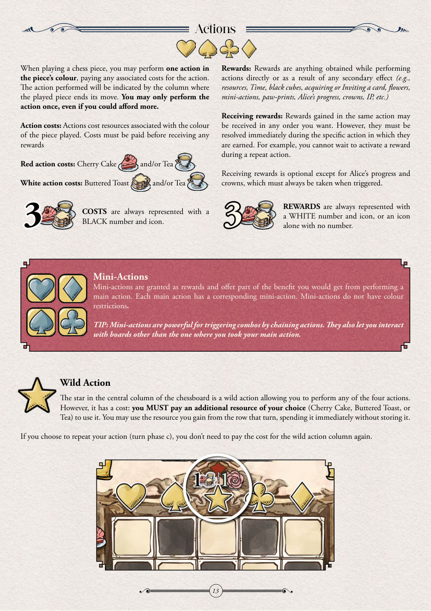
10♥ 红心 · 百花花园（The Garden of Live Flowers）
在花园里，玩家种植红色或白色的玫瑰丛，为典礼装点王国。
行动流程
- 移动园丁（可选）：种植前，你可以让相应颜色的园丁移到该颜色的相邻格，每次移动支付 1 点茶（即移入正对面的格子需 2 点茶）。注意：园丁从休息位移入花园是免费的——放到与其颜色匹配的四个格子中的任意一个。见“园丁休息”。
- 放一枚红心：从朝臣版图取相应颜色编号最小的红心标记。支付标示的费用（樱桃蛋糕或黄油吐司），获得图示的奖励。
- 种植玫瑰丛：把你的红心标记放到园丁当前区域内一个空格上。获得被标记盖住的奖励。
里程碑奖励
以下奖励按各颜色的进度授予：
- 第 3 枚红心放置后：爱丽丝前进一格。
- 第 4 枚红心放置后：获得一个迷你行动。
- 第 5 枚红心放置后：获得一个皇冠。
- 花朵：大部分奖励是花朵，它们在游戏中给你永久加成。可以把收集到的花朵标记放在提示板块上以便记住这些加成。（各项加成的详情见附录 1。）
- 园丁休息：若种植后园丁所在区域没有空格了，把园丁放回其休息位。
移除你的任一颜色编号最小的红心，免费获得揭示出的奖励。把标记放到一旁；它不放入花园。
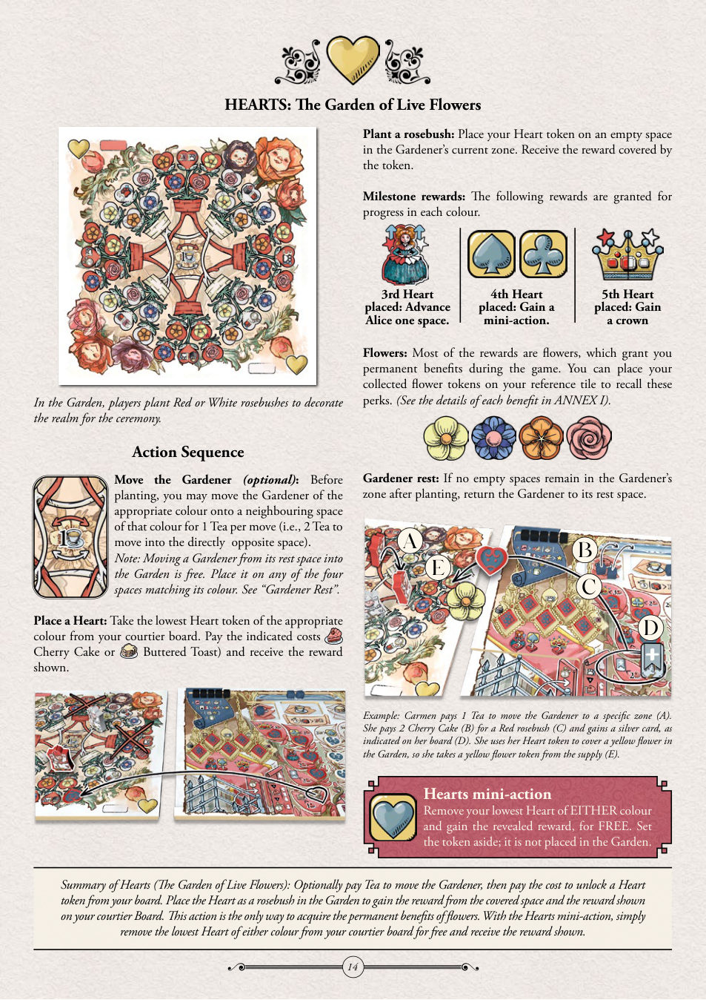
11♠ 黑桃 · 国王信使（The King's Messengers）
国王信使（红疯帽匠与白三月兔）为宴席递送请柬，并请求其他棋子协助。
行动流程
- 支付并移动：沿箭头让相应颜色的信使前进若干格，格数取决于你支付的资源：
有些格让你自选路径。同一格可被多名玩家占据。移动格数 红信使（疯帽匠）费用 白信使（三月兔）费用 1 格 1 樱桃蛋糕 1 黄油吐司 2 格 2 樱桃蛋糕 2 黄油吐司 3 格 2 樱桃蛋糕 + 1 茶 2 黄油吐司 + 1 茶 - 奖励：只获得你落格标示的格奖励，外加其卡牌奖励。
卡牌奖励（二选一）
- 购卡（Acquire）：按落格背后横幅标示的层级购买一张卡，支付其市场费用。
- 邀请（Invite）：从你的手牌或弃牌堆裁掉任意层级的卡，放到朝臣版图下方，终局时折算 IP。
里程碑奖励
- 印章（Seals）：经过标有印章的箭头时获得奖励：
- 第一名玩家：获得大印章中标示的全部奖励。
- 后续玩家：获得小印章中标示的全部奖励。
- 中央区：进入中央的金色区至少获得 1 次爱丽丝推进。
- 中央穿越：经过时授予一个免费迷你行动。（这不是印章。）
- 路径终点：任一信使抵达路径终点，获得相应颜色的一个皇冠。
让任一信使恰好前进一格，免费。照常获得所有奖励（格奖励、卡牌奖励、印章里程碑、中央穿越奖励）。
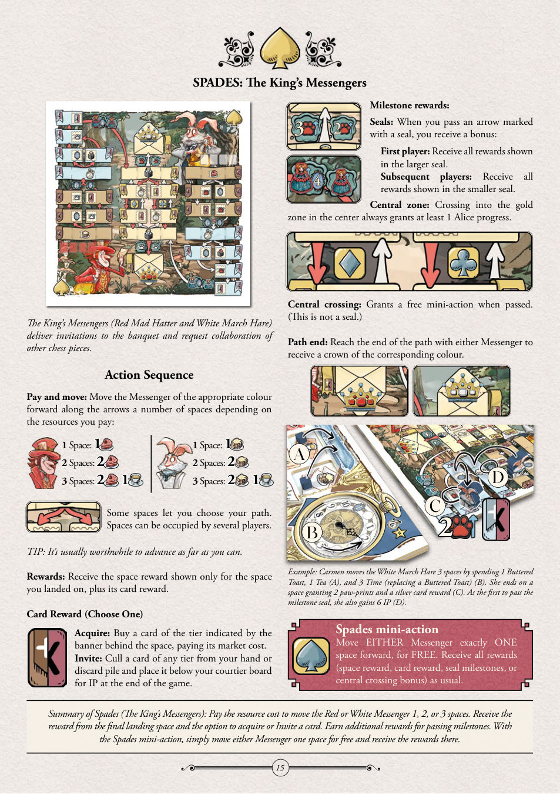
12♣ 梅花 · 双子之树（The Tree of Tweedledum and Tweedledee）
在双子之树，玩家移动特威达姆（红双子）或特威迪（白双子）向上攀爬，代表学习镜中世界的故事以便在宴席上讲述。
行动流程
- 支付并移动：选一条路径，让相应颜色的双子沿箭头移动，并支付箭头标示的费用（不能穿过超过 1 个箭头）。
黄色箭头标有两种费用，取决于移动的双子：樱桃蛋糕（红双子）或黄油吐司（白双子）。
黑色箭头只标一种费用，无论移动哪个双子都一样。 - 获得奖励：拿走移动落格上的所有实体书本标记。若格上印有书本，你再获得一个标记（印有多种颜色时任选一种颜色），以及其他标示的奖励。不要收取你抵达时已被书本标记盖住的任何印制奖励。因此，首个落在一个有实体书本标记格子的玩家会获得两本书，而标记被拿走后到访该格的后续玩家获得一本书加另一个印制奖励。
- 购买书签（可选）：花书本购买一枚书签。可以检视所有可用书签并任选。书签提供即时奖励、永久加成，或终局计分 IP。
里程碑奖励
- 高度奖励：从第 2 层爬到第 3 层时，对应颜色的爱丽丝沿其路径前进一格。
- 路径终点：任一双子抵达树顶，获得相应颜色的一个皇冠。
让任一双子沿任意相邻的黑色箭头路径移动，免费。照常获得奖励并获得购买书签的机会。
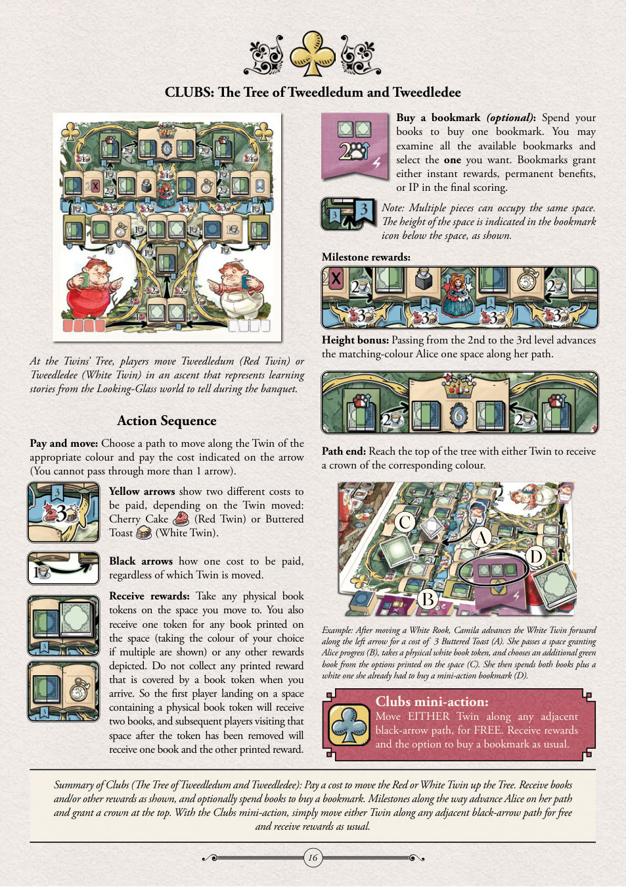
13♦ 方块 · 矮胖子之墙（Humpty Dumpty's Wall）
矮胖子（Humpty Dumpty）摔了个粉碎，一半忠于红色王国，另一半心向白色领地。玩家帮助矮胖子修建红白两半的墙，并爬上墙头宣扬他的理想、保卫首都。
行动流程
- 选格：在墙上选一个与所打棋子颜色匹配的格位。同时支付该格行与列标示的费用，把一块砖放进该格。注意：所有行都有费用；两列各需 1 点茶（格上的小图标是提示），另外两列没有额外费用。
- 放置规则：砖必须放在你选定列的最低空位上。砖不必放在矮胖子所在的那一行。
- 取方块：从朝臣版图任选一枚方块砖标记并移除，获得其标示的奖励。
- 放砖：把砖放到你在墙上选定的格，获得该格标示的奖励。
奖励与里程碑
- 同层奖励：在与相应矮胖子半身件同一行砌砖时，获得 2 IP。
- 砌完一行：若你的砖砌完了矮胖子所在的那一行，把矮胖子半身件移到下一行，并改为获得 4 IP。
- 里程碑奖励（按各颜色的进度授予）：
- 第 3 枚方块放置后：爱丽丝前进一格。
- 第 4 枚方块放置后：获得一个迷你行动。
- 第 5 枚方块放置后：获得一个皇冠。
从版图移除任一颜色的一枚方块，免费。获得图示奖励并把标记放到一旁；它不放到墙上。
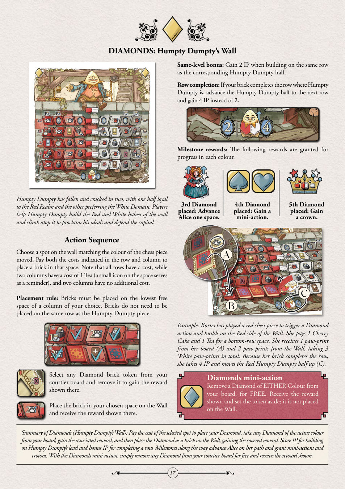
14回合示例
推进爱丽丝的回合示例
Cris 弃除一张白兵卡获得 1 点时间（A），然后打出并移动一辆红马，进入红心列获得 1 个樱桃蛋糕（B）。
她决定不动园丁，支付 2 个樱桃蛋糕放置一枚红心（C）。她把红心从朝臣版图上移除，获得该处标示的红爱丽丝推进（D），并盖住一个蓝花奖励格，从供应区拿取蓝花（E）。
红爱丽丝前进一格。但红爱丽丝路径上的下一格已被皇冠占据，于是她跳过它，前进到下一个可用格，为 Cris 赢得 8 IP（F）。此外这是一格心愿格，因此 Cris 立刻从皇冠陈列区移除一个皇冠（G），放到心愿上。她的时间不足以重复行动，所以将休整。她的回合结束时，所有玩家将结算该心愿（H）。之后皇冠弃除。
迷你行动 + 皇冠的回合示例
Camila 弃除一张银色白象卡获得 1 个樱桃蛋糕和 2 IP（I），然后打出并移动一辆红马进入红心列，获得 1 个樱桃蛋糕（K）。
接着她支付 2 个樱桃蛋糕放置一枚红心，盖住一个蓝花奖励格并从供应区拿取蓝花（L）。她从移除红心的版图格上还获得了梅花迷你行动，可以沿黑色路径移动一枚双子。奖励可以按任意顺序领取，她选择先拿花再执行迷你行动。Camila 把白双子移到树顶的最后一格（M），获得一个皇冠（N）和 3 本书。她选了 2 本蓝书和 1 本白书，立刻换成一枚终局计分书签（O）。注意：迷你行动可以任选颜色执行，与触发它的棋子无关。
然后她从皇冠陈列区取下一个可用皇冠，放到白爱丽丝的路径上。从爱丽丝当前位置起，下一格不可用（是心愿格，不能放皇冠），再下一格已被另一个皇冠占据，于是 Camila 把皇冠放到第三格（Q）。这为她结算该格声望的两倍（7 × 2），共计 14 IP。
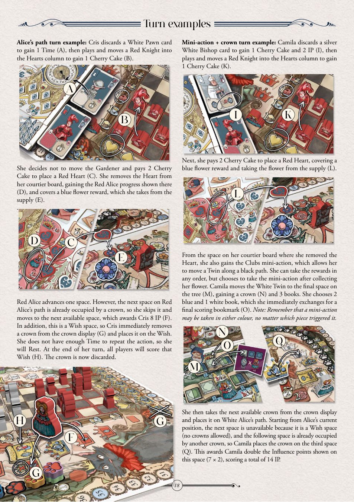
15游戏结束与终局计分
当最后一个皇冠被移除时触发游戏结束。此后继续打完当前轮次，直到持有镜子标记的玩家右侧的玩家完成其回合。
终局计分
- 爱丽丝的加冕：爱丽丝以推进更多的一方颜色加冕。
- 若一个爱丽丝领先另一个：把较领先颜色的心愿板块翻到白金面。每位玩家为其获得的该颜色每个皇冠获得 8 IP（以朝臣版图与中央版图上追踪的为准）。
- 若两个爱丽丝持平：两组心愿板块都不翻面。每位玩家为其获得的每个皇冠获得 8 IP，无论颜色。
- 猫咪轨道：查看你每个爪印标记的位置，决定如何结算爱丽丝的心愿：
- 未到 ×1：该颜色的心愿不计分。
- ×1 与 ×2 之间：从该颜色的心愿中自选一个计分。
- 超过 ×2：该颜色的两个心愿都计分。
- 受邀宾客：把你所有已邀请卡的邀请奖励（卡面右上角标示）加总计分。（见附录 2。）
- 书签：若有终局计分书签，现在加总计其 IP。
终局计分示例
胜利
声望最高的玩家成为新爱丽丝女王的首席顾问，赢得游戏。平局时，女王决定多留几个人在身边，他们共享胜利。
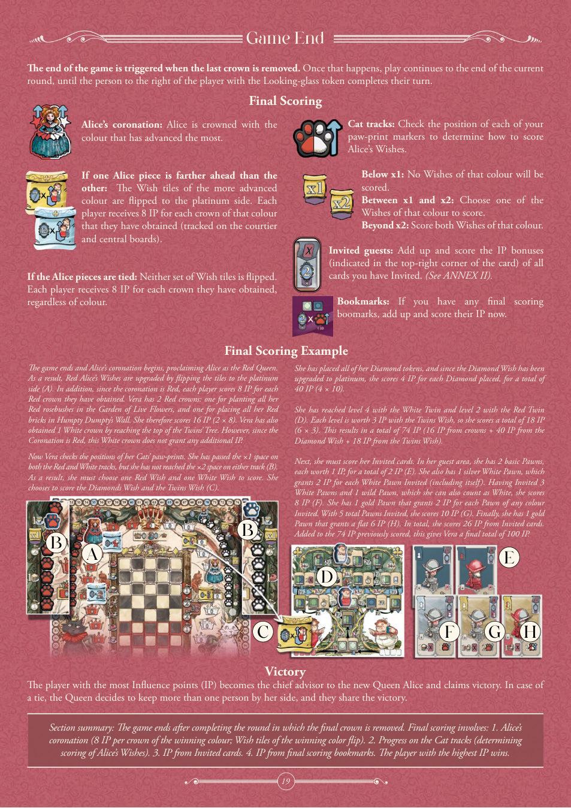
16单人模式 · 黛娜（Dinah）
单人模式中，你与黛娜（Dinah）对抗——《爱丽丝镜中奇遇记》里两只小猫的妈妈。黛娜是一个自动对手，会与你争夺资源和对王国的控制。
单人模式设置
- 版图与棋子：按两人游戏布置中央版图。按难度选择黛娜的颜色：绿色（简单）、紫色（普通）、橙色（困难）、蓝色（极难）。拿取所选颜色的玩家版图，翻到黛娜一面，并按以下方式准备。
- A · 黑色立方体轨道：把 1 个黑色立方体放到上轨道起点。
- B · 颜色标记：拿 1 个黛娜颜色的立方体作颜色标记（见回合顺序）。
- C · 红心与方块标记：把黛娜颜色的所有红心和方块标记放入槽位。
- D · 车票卡：洗混车票卡并抽取两张。你自选一张并决定用哪一面。黛娜拿另一张，使用相反的颜色（例如你选了你卡片的白面，黛娜就用她卡片的红面）。黛娜获得该车票卡的其余奖励与行动推进。
- E · 起始资源：用 1 个黛娜颜色立方体标记黛娜从车票卡获得的起始资源——放到相应资源轨道的底部（樱桃蛋糕放红列，黄油吐司放白列）。
- F · 黛娜牌库：洗混 10 张黛娜卡（兵、象、车、马各 2 张；王、后各 1 张），组成牌库，放在黛娜版图旁。
黛娜的奖励、资源与计分
游戏中，黛娜会像人类玩家一样沿爱丽丝路径推进、放置皇冠、结算心愿。黛娜每回合也能重复一次行动。黛娜管理资源的方式不同，且不支付资源费用。她不累积时间；本应获得的时间每 1 点改为换成 IP。游戏结束时，黛娜像人类玩家一样计分，但不使用终局计分书签的判定，而是改为：她持有的每张终局计分书签、每回合书签、每朵花和每张未邀请的购入卡，各按黛娜版图上按难度标示的固定 IP 计分。
回合顺序
- 抽卡：翻开黛娜牌库顶卡。
- 确定颜色：黛娜资源轨道中立方体所在位置（红列或白列）决定黛娜用抽到的卡打出红色还是白色的棋子。把颜色标记立方体放到卡上标记。
- 打出一个棋子：按以下优先级打出卡上标示类型与颜色的棋子（见“棋子走法与行动”）。
- 俘获：只要可能，黛娜总是俘获，并选择价值最高的可用棋子。并列时由你决定她俘获哪个。
- 营救：若要打的棋子身在监狱，黛娜营救它。把被救棋子放到黛娜版图右上角图示之后的第一个可用重生格。被救棋子本回合不移动。
- 移动：移动棋子。移动方向参照卡面顶部的走法图，从左上开始、自左向右选第一个可行走法。若黛娜移动的是车、象或后，她会尽可能推进，直到抵达棋盘边缘、俘获或被同色棋子挡住。
- 获得资源：黛娜获得落格行的资源；若是百搭行则获得 1 点茶。
- 执行行动：黛娜无视落格的列，改为总是执行她卡上标示的行动。
- 重复行动：若资源立方体在 🔄 格，把立方体放回底行并重复黛娜的行动。
- 重洗：若黛娜已打出 6 张或更多卡，把她的弃牌堆与其牌库剩余的卡洗混，刷新牌库。
管理黛娜的资源
黛娜从不支付资源，她获取和追踪资源的方式与人类玩家不同。
- 时间：黛娜每获得 1 点时间，按难度换算为 1、2 或 3 IP（标示在黛娜版图右上角）。
- 资源：她获得资源时，把黛娜的资源立方体在资源轨道上左移或右移。她获得茶或当前标记颜色的资源时，把立方体上移。若立方体已在最顶格，她改为获得 4 IP。注意：立方体的起始位置取决于黛娜的车票卡。
- 爪印：在某些版图/难度下，当资源立方体沿侧边箭头向上移动时，黛娜还在标示处获得爪印。
- 卡牌：购卡时，拿取标示层级最左边的一张卡，叠放到黛娜牌库旁单独的“已购卡牌堆”。邀请卡时，从已购卡牌堆抽取黛娜已购最高层级的顶卡。若她没有可邀请的卡，黛娜改为购入一张铜卡。
- 黑色立方体：让黑色立方体沿其轨道右移，经过的格位授予标示奖励。若立方体移出最后一格，把它放回轨道起点并授予黛娜 6 IP。
- 迷你行动：黛娜以与主行动相反的颜色执行迷你行动（如可能）。若该颜色无法执行，则以当前活跃颜色执行。
棋子走法与行动（黛娜）
走法：移动一枚仍在棋盘上且未被堵住的兵。按卡上标示的优先级选一个有兵的列来移动；一列有多枚兵时移动最靠前的一枚。
行动：拿取当前活跃颜色编号最小的红心标记，按卡上标示的优先级在园丁当前位置选一个花园格种植。若黛娜已有两朵同类型的花，她不能再在该类型的格子里种第三丛。若当前位置无法种植，则顺时针移动园丁。
走法：按卡上标示的优先级，沿一个方向斜走尽可能远。
行动：让相应信使移动 2 格。邀请黛娜已购卡牌堆中最高层级的顶卡。（这不算邀请奖励，即黛娜没有卡可邀请时也不会购入铜卡。）给予黛娜落格奖励。若已购卡牌堆没卡，她让信使前进 3 格，拿取标示层级最左边的卡，并拿取落格奖励。遇到岔路时，黛娜按卡底箭头标示选左或右。
走法：尽可能向前移动马；否则按卡上标示的优先级横向移动。
行动：有多条路径时，黛娜按卡上标示颜色的箭头推进相应的双子。她照常获取书本。每当她持有任意 2 本书，就换 1 枚书签——无视费用，按卡上标示的优先级选择。黛娜优先凑齐“1 即时 + 1 每回合 + 1 终局计分（费用 2）”的一套，然后再凑费用 3 的一套。拿即时书签时，她优先选授予爪印的，并选拯最多爪印的那枚（红白都有时随机选）。其余书签随机选。即时书签立刻结算。每回合与终局计分书签的效果忽略，改为计入黛娜的终局得分。
走法：按卡上标示的优先级，沿一个方向直走尽可能远。
行动：从黛娜版图拿取当前活跃颜色编号最小的方块标记，按卡上标示的优先级放到最低的合法格。黛娜照常获得版图与墙的奖励以及矮胖子的 IP。
走法：按卡上标示的优先级，沿一个方向走尽可能远。
行动：邀请黛娜已购卡牌堆最高层级的 2 张顶卡。抽取一张新卡并执行该卡标示的行动，但不移动其棋子。
走法：按卡上标示的优先级朝一个方向移动一格。
行动：黛娜获得 2 个当前活跃颜色的爪印。抽取一张新卡并执行该卡标示的行动，但不移动其棋子。
通用说明：除兵外的所有棋子，只有在其他方向都走不了时才允许向后移动。若打出的棋子被堵住，照常在其当前位置执行行动。
耗尽（Exhaustion）
若一个行动已彻底完成或无法执行，抽取一张新卡并执行该卡标示的行动。与王、后一样，只执行行动，不移动该卡标示的棋子。
黛娜的终局计分
游戏结束时，黛娜像人类玩家一样计分，书签与以下增项除外。选心愿计分时，她选给自己 IP 最多的那个。此外，结算完受邀卡后，她还为以下类别结算额外 IP：(1) 每回合与终局计分书签；(2) 花朵；(3) 未被邀请的购入卡。这些类别的 IP 数量标示在黛娜版图右上角，随难度变化。
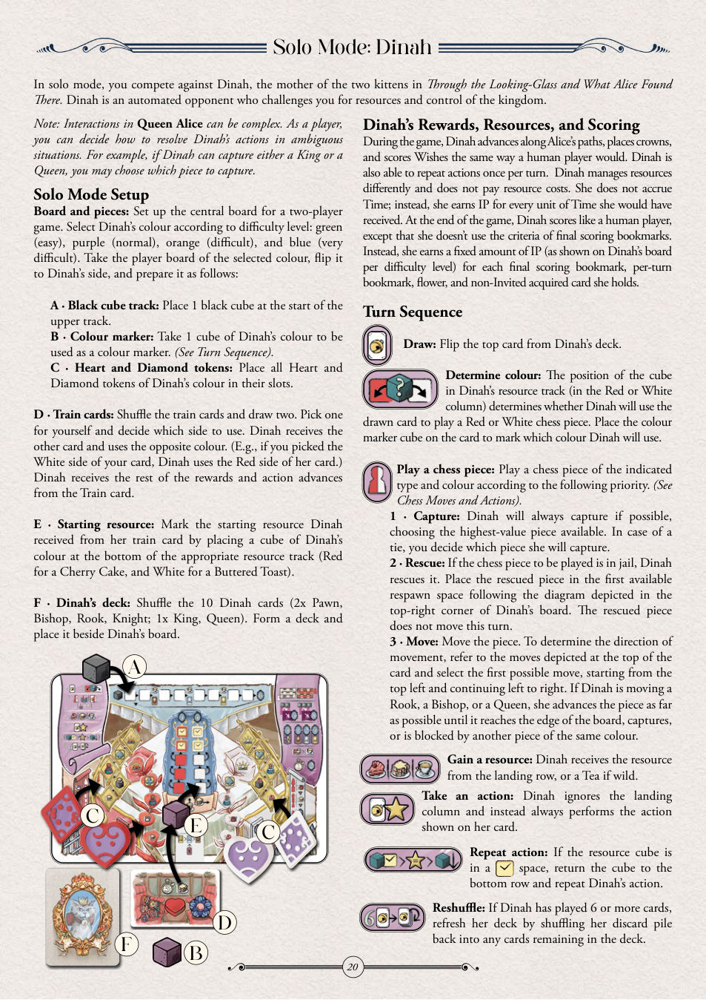
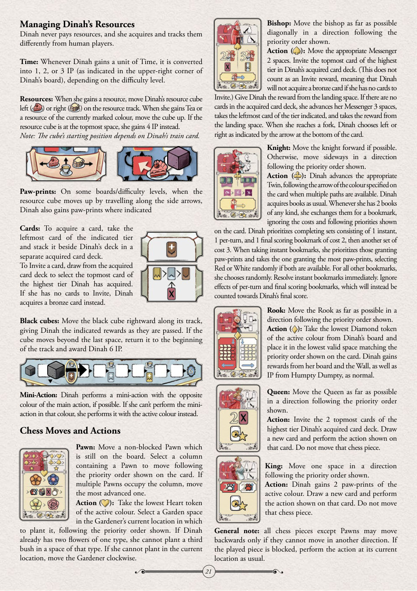
附录 1 · 花（永久加成）
在红心版图上，玩家可以获得授予永久加成的花。同类型第二朵花会提升加成；允许持有超过两朵同类型花，但不再提供额外好处。
粉玫瑰（Rose）
- 1 朵：免费使用棋盘上的通用行动列。
- 2 朵：若打出的棋子停在棋盘四条中央行之一，除资源外再获得标示数量的时间。
黄花
- 1 朵：手牌上限永久提高到 5 张。
- 2 朵：购卡时可进入卡牌市场任意层级，作为额外费用或奖励——可支付 1 点时间升一层，或获得 1 点时间降一层（例如花 2 点时间把铜卡升为金卡，或得 2 点时间把金卡降为铜卡）。先选层级并支付或获得时间，再购卡并支付其费用（如有）。
蓝花
- 1 朵：购买资源的费用从 3 点时间降为 2 点时间。
- 2 朵：获得 1 点茶换 2 点时间的能力，次数不限。
橙花
- 1 朵：重复行动的费用从 6 点时间降为 5 点时间。
- 2 朵：执行重复行动的费用减免 1 个任意资源。
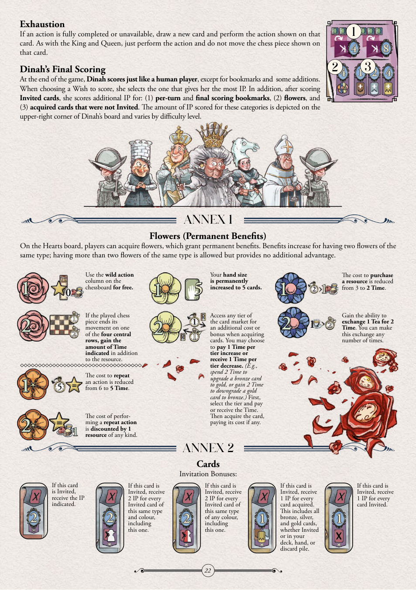
附录 2 · 卡牌
打出与弃除奖励（按棋子类型 × 卡牌等级）
每张棋子卡有打出奖励（打出时立刻获得）与弃除奖励（回合开始弃除时获得）。
| 棋子 | 基础/铜卡 | 银卡 | 金卡 |
|---|---|---|---|
| 兵 | 打出：邀请 1 张卡。 弃除：1 资源。 |
打出：1 资源 + 邀请 1 张卡。 弃除：1 爪印。 |
打出：1 自选资源 + 邀请 1 张卡。 弃除：2 爪印。 |
| 马 | 打出：1 点时间。 弃除：1 资源。 |
打出：2 点时间。 弃除：3 点时间。 |
打出：3 点时间。 弃除：4 点时间。 |
| 象 | 打出：2 IP。 弃除：1 资源。 |
打出：4 IP。 弃除：1 资源 + 2 IP。 |
打出：6 IP。 弃除：1 资源 + 4 IP。 |
| 车 | 打出：减免 1 个资源。 弃除：1 资源。 |
打出：减免 1 个自选资源。 弃除：1 个自选资源。 |
打出：减免 2 个自选资源。 弃除：解锁并分配 1 个黑色立方体到标示资源。 |
| 王 | 打出：弃除一张基础或铜卡并获得其弃除奖励。 弃除：购入 1 张铜卡。 |
打出：弃除一张基础、铜或银卡并获得其弃除奖励。 弃除：购入 1 张铜卡 + 1 点时间。 |
打出：弃除任意层级的卡并获得其弃除奖励。 弃除：购入 1 张银卡 + 1 点时间。 |
| 后 | 打出：俘获 1 枚对方颜色的兵。 弃除：邀请 1 张卡。 |
打出：俘获对方颜色中除王/后外的任意棋子。 弃除：邀请 1 张卡 + 1 点时间。 |
打出：俘获对方颜色中除王/后外的任意棋子，并获得 2 个对方颜色爪印。 弃除：邀请 2 张卡。 |
邀请奖励（Invitation Bonuses）
若此卡被邀请，获得标示的 IP。
若此卡被邀请，每有一张被邀请的同类型同色卡（包括本卡）获得 2 IP。
若此卡被邀请，每有一张被邀请的同类型卡（任意颜色，包括本卡）获得 2 IP。
若此卡被邀请，每有一张购入的卡获得 1 IP。包括所有铜、银、金卡——无论被邀请、在牌库、手牌还是弃牌堆。
若此卡被邀请，每有一张被邀请的卡获得 1 IP。
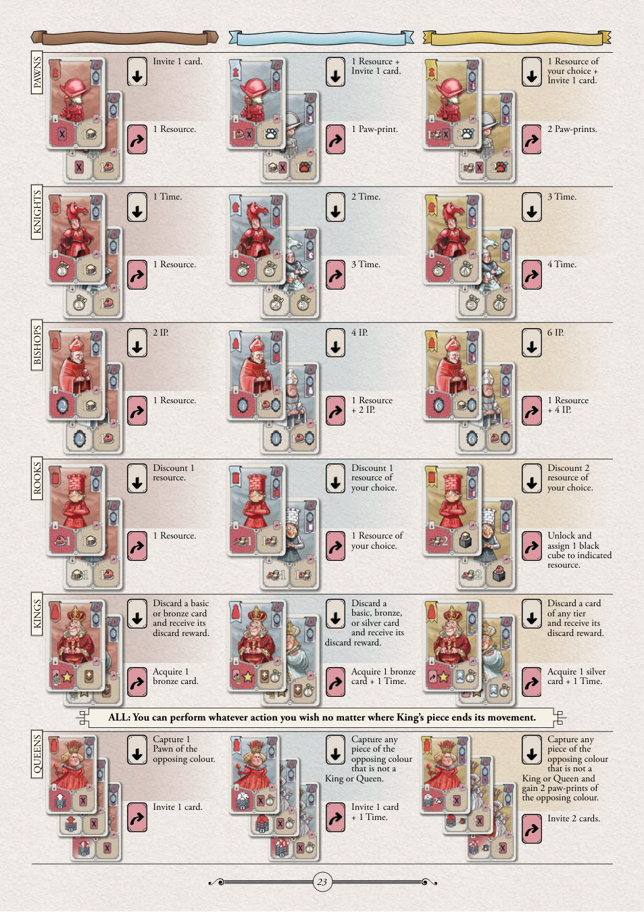
附录 3 · 书签
即时（INSTANT）
| 费用 | 效果 |
|---|---|
| 任意 2 本书 | 获得 2 点时间。 |
| 2 本白书 | 获得标示数量的标示颜色爪印。仅限 3–4 人游戏。 |
| 2 本白书 + 1 本绿书 | 获得标示的迷你行动（红心或方块）。 |
每回合（ONCE PER TURN）
使用时翻面，休整时翻回。以下费用除注明外均为 1 本白书 + 1 本绿书：
| 费用 | 效果 |
|---|---|
| 1 白 + 1 绿 | 若你本回合解锁了黑色立方体，获得 2 点时间。 |
| 1 白 + 1 绿 | 若你本回合俘获了棋子，获得 2 点时间。 |
| 1 白 + 1 绿 | 若你本回合购入了卡，获得 2 点时间。 |
| 1 白 + 1 绿 | 若你本回合营救了棋子，获得 2 点时间。 |
| 1 白 + 1 绿 | 若你本回合邀请了卡，获得 2 点时间。 |
| 1 白 + 1 绿 | 若你推动了任一爱丽丝，获得 3 点时间。 |
| 1 白 + 2 绿 | 执行黑桃/方块/红心行动时，减免 1 个樱桃蛋糕或 1 个黄油吐司。 |
| 1 白 + 2 绿 | 执行黑桃/方块/红心行动时，减免 1 点茶。 |
终局计分（FINAL SCORING）
| 费用 | 效果 |
|---|---|
| 1 白 + 1 蓝 | 标示颜色的每个爪印 2 IP。上限 10 步。 |
| 1 白 + 2 蓝 | 每个解锁的黑色立方体 6 IP。上限 5 个。 |
| 1 白 + 1 蓝 | 标示颜色的每张受邀卡 2 IP。百搭卡按两色计。上限 10 张。 |
| 1 白 + 2 蓝 | 时钟上剩余的每点时间 3 IP。上限 10 点。 |
| 1 白 + 1 蓝 | 每张购入的铜卡与银卡 2 IP（上限 10 张）；每张购入的金卡 4 IP（上限 5 张）。 |
| 1 白 + 2 蓝 | 你沿红/白爱丽丝路径每前进一格 8 IP。（在朝臣版图上查红心与方块的进度，在其行动版图上查黑桃与梅花的进度。） |
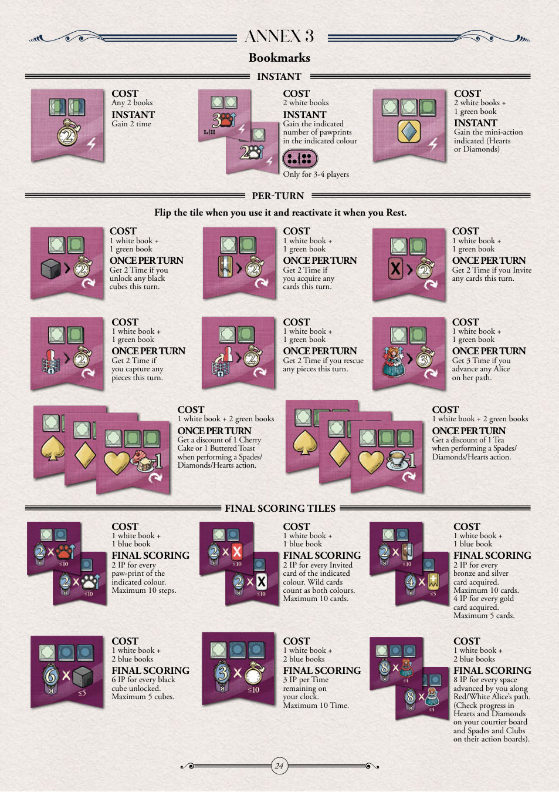
附录 4 · 爱丽丝的心愿
每块心愿板块有黄色起始面与白金升级面（获得 8 人时代加冕升级后使用白金面数值）。
| 心愿 | 起始 | 白金 |
|---|---|---|
| 你移除的每枚红心（红白加总） | 2 IP | 4 IP |
| 你的双子走的每一步（红白加总，取各双子所在格底部的数字） | 3 IP | 6 IP |
| 你移除的每枚方块（红白加总） | 2 IP | 4 IP |
| 你的信使走的每一步（红白加总） | 1 IP | 2 IP |
| 你的每对红白红心（已移除） | 5 IP | 9 IP |
| 红白双子配对同步走的每一步（取各双子所在格底部的数字） | 7 IP | 12 IP |
| 红白信使配对同步走的每一步 | 2 IP | 4 IP |
| 你的每对红白方块（已移除） | 5 IP | 9 IP |
| 你的每对同类型花 | 7 IP | 12 IP |
| 每本书：未花掉的剩余书本，加上你拥有的书签板块上印的书本数，上限 20 本 | 1 IP（上限 20/40） | 2 IP |
| 信使抵达的每个铜区与金区格（红白加总步数） | 2 IP | 3 IP |
| 你放置在矮胖子所在层或其下方的每枚方块（红白加总） | 3 IP | 5 IP |
| 每 3 朵不同类型的花 | 11 IP | 16 IP |
| 你拥有的每枚即时或每回合书签 | 3 IP | 5 IP |
| 你越过的每个印章 | 5 IP | 8 IP |
| 墙的每一条含有你方块的列（红白加总） | 3 IP | 5 IP |
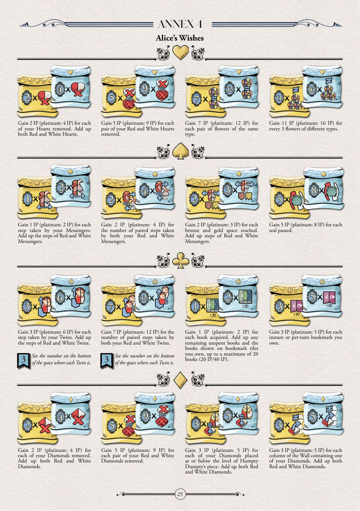
附录 5 · 车票卡
每张车票卡一面偏红、一面偏白，两面奖励对称（红/白对应）。以下按卡面条目整理：
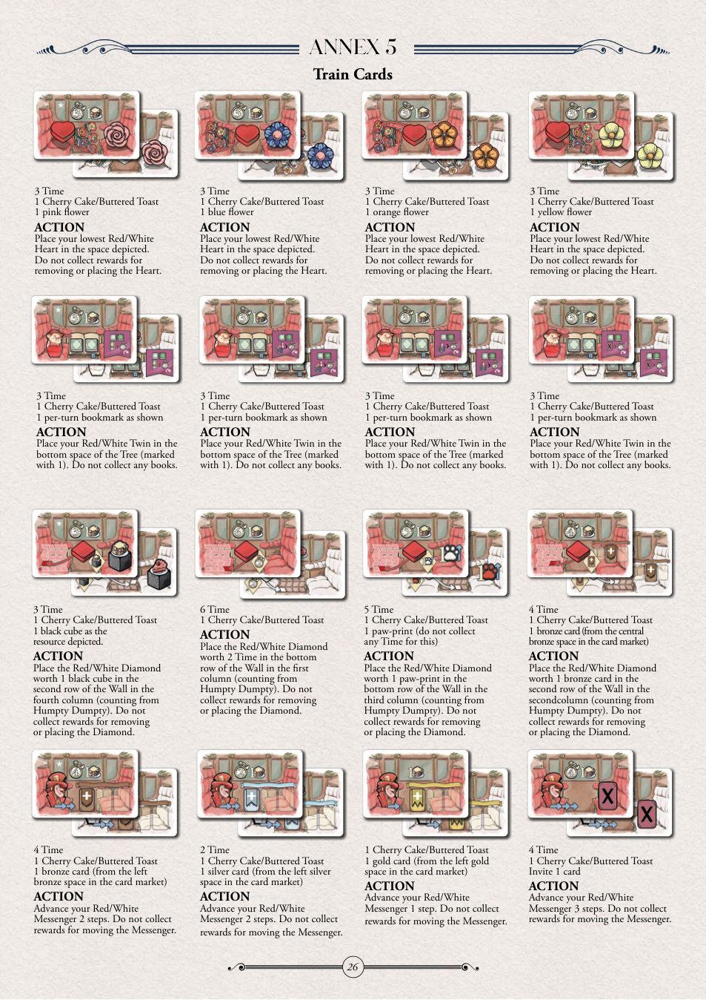
附录 6 · 符号表
通用符号
| 符号 | 含义 |
|---|---|
| ⏱＋ | 获得时间。 |
| ⏱− | 支付时间。 |
| ★（棋盘中央列） | 通用行动：执行四种行动中的任意一种。 |
| 🍰 / 🍞 / 🍵 / 任意 | 樱桃蛋糕（红）/ 黄油吐司（白）/ 茶；无指定图标时为自选资源。 |
| 👑↑（红/白） | 放置红皇冠 / 白皇冠 / 当前活跃颜色路径上的皇冠。 |
| 🐾（红/白/任意） | 沿红猫轨道 / 白猫轨道 / 任一猫轨道前进；标示数字则按活跃颜色轨道前进相应步数。 |
| ♠♥♣♦ 图标 | 执行对应行动；对应迷你行动见各行动章节。 |
| 卡牌图标（铜/银/金） | 购入一张铜/银/金卡。 |
| 🔒→📦 | 解锁一个黑色立方体并分配给标示的资源。 |
| 📦− | 从你的资源区移除一个黑色立方体，放回上锁储藏区。 |
| 📗（多色） | 拿取标示颜色中的任意一种书；单一颜色则拿取该书。 |
| ✉ | 从弃牌堆或手牌邀请任意一张卡（计分时：受邀卡）；标示颜色时为邀请红/白卡（计分时：对应颜色的受邀卡）。 |
| 💠（心愿） | 爱丽丝的心愿（起始面 / 白金面）。 |
| 👑− | 从陈列区弃除一个皇冠。 |
| 🌸 | 拿取标示的花；无指定则为任意花。 |
| 折扣图标 | 获得标示资源的减免；支付标示资源（全部标示时任选其一）；支付标示数量的当前活跃颜色资源；获得任意资源；获得标示资源。 |
| ❤/♦ 标记 | 放置红心（花园玫瑰）/ 方块（砌墙砖）。 |
| 棋子图标 | 俘获任意棋子 / 弃除奖励（弃除一张卡）。 |
| ⟳（手牌） | 补牌至手牌上限。 |
| ＋IP | 主行动奖励 / 声望点数。 |
单人模式符号（SOLO MODE）
| 符号 | 含义 |
|---|---|
| 🂠＋ | 黛娜抽取一张新卡。 |
| ⟳ | 黛娜重复刚执行的行动。 |
| 📦 | 黛娜获得通用黑色立方体奖励。 |
| 🂠＋⚡ | 黛娜抽取一张新卡并执行该卡行动，不移动棋子。 |
| −2 / ＋1 | 数值调整示例。 |
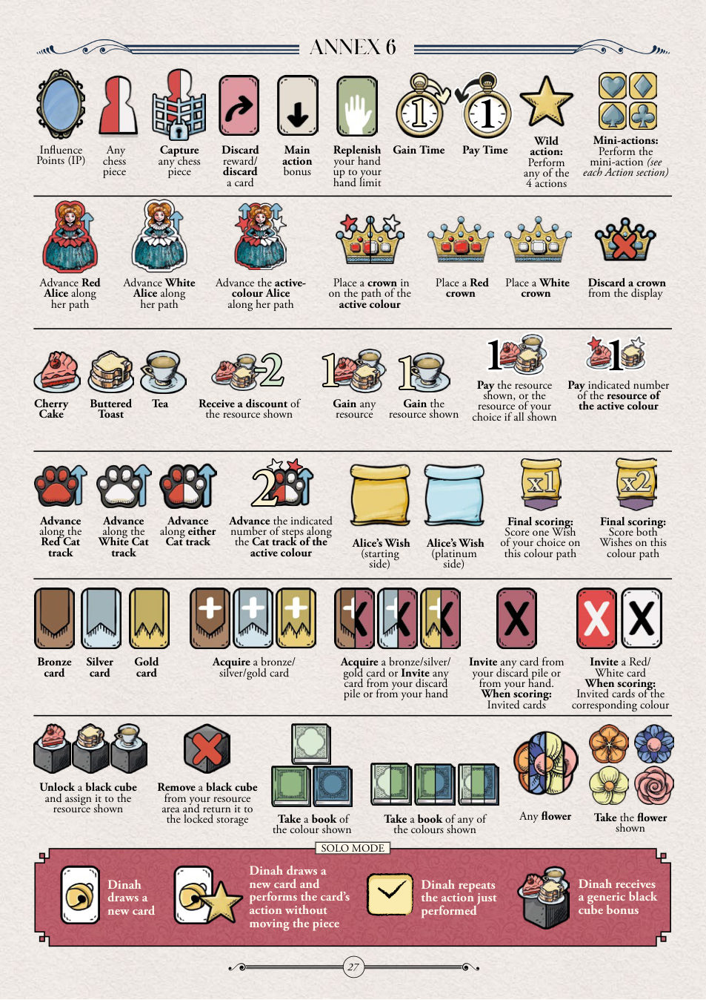
变体规则
隐藏目标（Hidden objectives）
给每位玩家发 1 张隐藏目标卡。只有四人游戏才加入标有 ④ 的两张卡，否则发牌前放到一旁。这些卡授予标示颜色的 2 个皇冠，终局计分照常计入。
标有 ③ 的卡只用于三人游戏：若红白爱丽丝相差一格（不计被皇冠覆盖的格），授予 16 IP；若两者持平，授予 24 IP。
替代皇冠奖励（Alternative crown rewards）
洗混迷你行动皇冠。在皇冠陈列区左侧第一个空位放一个 ×2 皇冠，接着放一个迷你行动皇冠，如此交替直到陈列区放满。移除皇冠时始终从左到右。迷你行动皇冠被获得时，授予其所覆盖格的点数和标示的迷你行动奖励。可选规则：放置迷你行动皇冠时，你可以选择放弃迷你行动奖励，改为获得双倍点数（视同 ×2 皇冠）。
强化起始卡（Enhanced starting cards）
非对称强化卡按以下方式替换起始牌库中的基础卡：每位玩家抽取 2 张强化卡，看过两张后选 1 张保留，把另一张交给左手边的玩家。然后每位玩家从起始牌库中移除与强化卡颜色和类型对应的两张基础卡，把两张强化卡洗入（例如用强化白兵替换基础白兵）。单人模式下，直接抽取 2 张强化卡并换掉基础牌库中对应的卡。然后照常开始游戏。
制作人员
设计：David Heras & Héctor Carrión
插画：Amelia Sales & Iván Iserte
平面设计：Iván Iserte（Dossom Studio）& Pablo Sanz
开发：Antonio Fernández Díez、Kortes Serrano、Pablo Sanz & Manuel J. García Gata
规则书：Héctor Carrión & Antonio Fernández Díez
文字编辑与校对：Jess Haskins（The Game Editors）
出版：Combo Games S.L. · c/ Teresa Claramunt 3, 3B, 02006 Albacete（España）
版权：©2026 Combo Games, S.L. 保留所有权利。
致谢（节译）：Combo Games 感谢所有参与《Queen Alice》项目的团队成员：感谢 David 与 Héctor 给了我们开发并出版这款精彩游戏的机会；感谢 Iván Iserte 在时间紧任务重的情况下做出的巨大贡献，让游戏美观又易上手；感谢 Amelia Sales 让我们的游戏成为有史以来最美的游戏之一；感谢每一位让游戏不断成长的测试者，尤其是 Dani Garcia、Carlos Martínez “Gemerlos”、Natalia Angulo、Juan Cantos、David Bernal、Antonio Guillamó “Guilla”、Daniel Montesinos “Kabra”、Johanna Frontado “Nana”，以及所有在 TTS/Discord 上、在 Protos y Miguelitos 和 Protos y Tipos 上玩过《Queen Alice》的朋友们。最重要的是感谢我们的“廷臣”们、Gamefound 众筹支持者，以及为这款游戏传播推广的桌游媒体。
David Heras：感谢女儿 Camila，她的笑容点亮我的每一天；感谢 Keyla，她给了我一个漂亮的小女儿，也证明了她是世界上最好的妈妈；感谢 Héctor 容忍我，并愿意和我一起做出年度游戏；最后感谢整个 Combo 团队在开发过程中对我们盲目信任、没有叫我们滚蛋（至少没太经常），并出版了世界上最美的游戏。
Héctor Carrión：感谢家人一直鼓励我做热爱的事；感谢伴侣 Cris 日复一日地包容我、帮助我实现做桌游的梦想；感谢 David 给了我与他一起做这款游戏并向他学习的机会；感谢 Combo 相信我们能把提案变成像样的作品；也感谢桌游社区里所有用建议和支持帮助这款游戏成型的人。